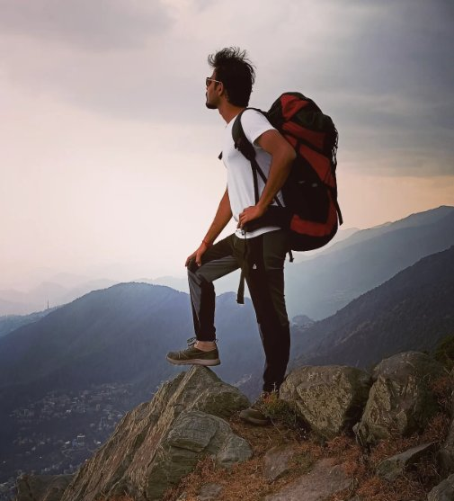
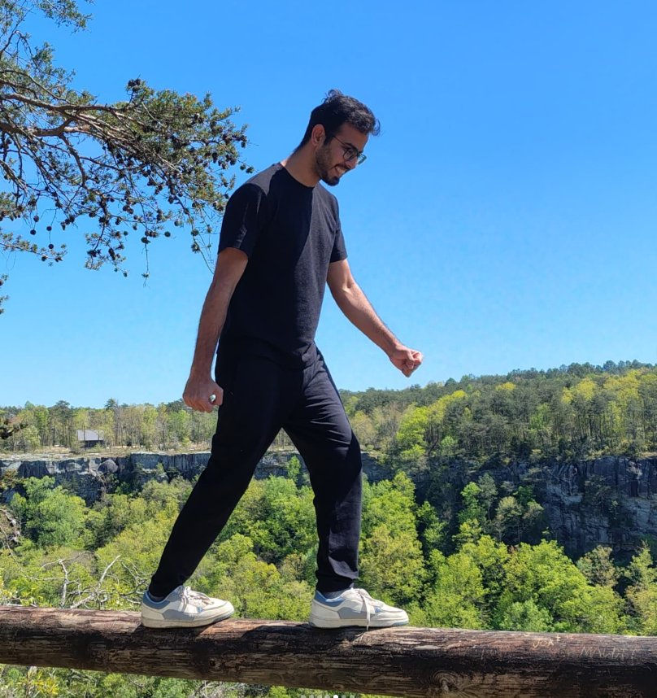

I come from Palani — a small, vibrant town nestled in the foothills of the Western Ghats in Tamil Nadu, India. It's a place of temples, mist, and mountains. But what shaped my scientific curiosity wasn't the mountains themselves — it was something a little further up.
Palani sits remarkably close to the Kodaikanal Solar Observatory, one of India's oldest and most respected centres for solar research. As a child, I visited the observatory with family — not as a student, just as a curious visitor. I remember standing there, watching the instruments pointed at the sky, and asking myself: How do we actually get information about the Sun? And why does anyone want to study it so badly?
Those questions never really left me. They followed me through school, through university, and eventually into a PhD in physics — where I finally found the tools to start answering them.
The Sun is far from the calm, steady ball of light it appears to be. It is a dynamic, sometimes violent star — one that erupts, twists, and throws enormous clouds of magnetised plasma into space. My research lives right in the middle of that drama.
I study transient phenomena in solar active regions — events like flares, surges, filament eruptions, and jets that happen suddenly and release enormous amounts of energy. To understand these events, I use spectroscopic and imaging observations in the ultraviolet, extreme ultraviolet, and X-ray wavelengths — light that our eyes cannot see, but that carries the signatures of hot, fast-moving plasma on the Sun's surface and atmosphere.
What genuinely captivates me is the diagnostic aspect: decoding what the light from the Sun is telling us. Through spectroscopy, I can measure temperatures, velocities, densities — essentially reading the Sun's behaviour from millions of kilometres away. Using tools like IRIS (Interface Region Imaging Spectrograph) and data analysis in IDL and Python, I try to understand how energy is stored, released, and transported in the solar atmosphere.
At its core, my curiosity hasn't changed much since that childhood visit to Kodaikanal — I'm still trying to figure out what the Sun is doing, and why.

Standing on top of the world — somewhere in the Himalayas.

Somewhere between a trailhead and a great view — my favourite place to think.
When I'm not staring at solar spectra, I'm usually looking for a trail to walk. Trekking and hiking give me the kind of perspective that no dataset ever quite can — you spend hours climbing, your mind wanders, and somewhere along the way a problem you've been stuck on suddenly becomes clear. The Western Ghats, where I grew up, gave me a lifelong love for mountains and open skies.
I also love to travel — not just to reach destinations, but to experience the way landscapes, cultures, and people differ from place to place. And wherever I go, I bring a camera. Photography, for me, is another way of observing — framing light, finding patterns, capturing a moment that would otherwise disappear. Not so different from what I do with the Sun, really.
Underwent an advanced training programme on "Studies of Charged and Neutral Radiation in Space, Its Variation and Potential Impact on Human Presence in Space." Gained hands-on experience with the design and working principles of high-energy spectrometers such as gamma-ray and neutron spectrometers, essential for investigating high-energy astrophysical phenomena.